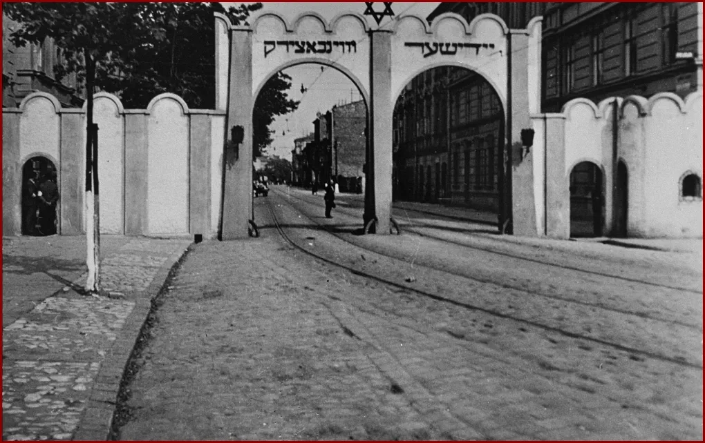
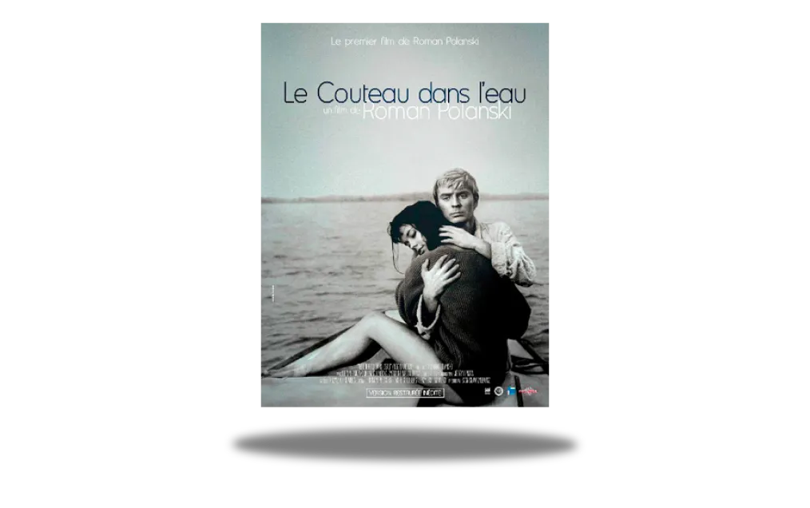
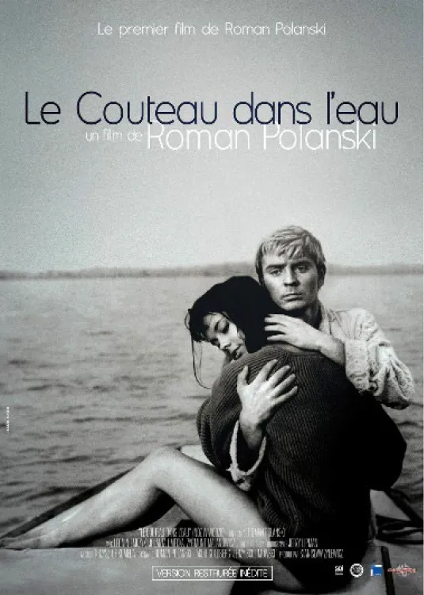
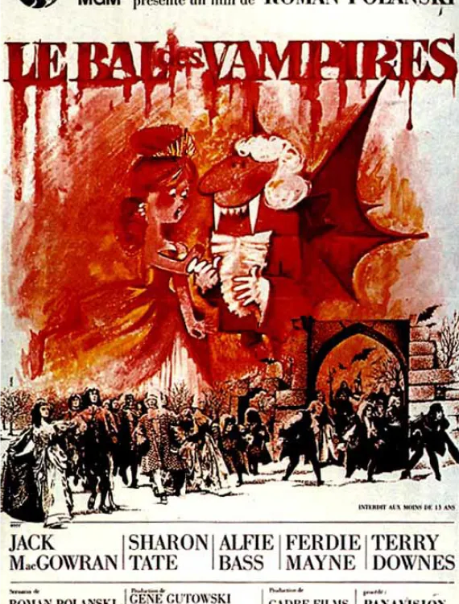
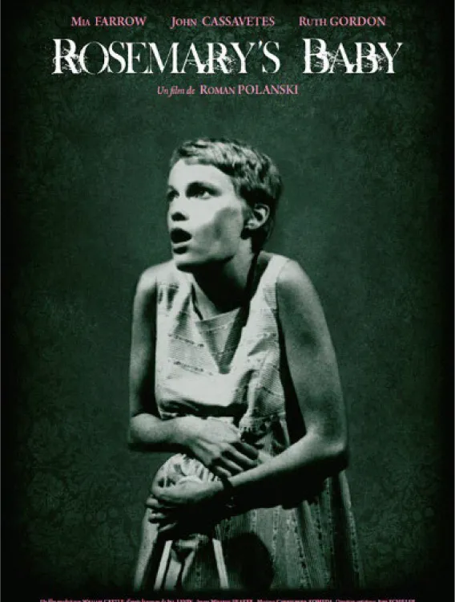
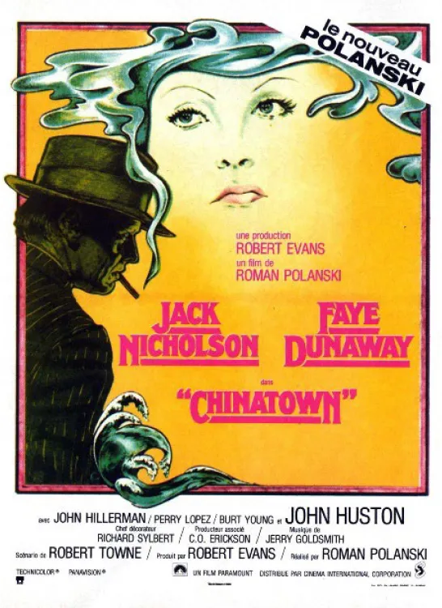
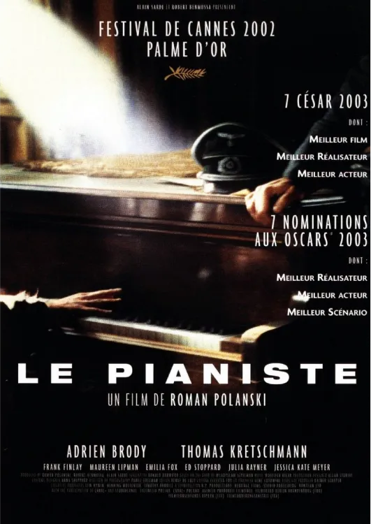

Roman Polanski, un réalisateur franco-polonais, marqué par la persécution des Juifs pendant la guerre. Le pianiste, son
film le plus intime.
Roman Polanski, un réalisateur de génie et de scandale
Roman Polanski est un réalisateur, producteur, scénariste et acteur franco-polonais, né le 18 août 1933 à Paris. Il est
considéré comme l’un des cinéastes les plus importants et les plus controversés de son époque, ayant signé des œuvres
majeures dans des genres variés, du thriller au drame historique, en passant par la comédie noire et le film d’horreur.
"Roman Polanski en Pologne"01/2015 (EPA/MAXPPP)
Biographie
Roman Polanski est un cinéaste franco-polonais qui a vécu les horreurs de la Seconde Guerre mondiale, le succès et la
gloire, mais aussi le scandale et l’exil.
"Roman Polanski lors de son arrestation" 1977
Sa vie et son œuvre sont marquées par les thèmes de la violence, de la folie, du sexe et de la mort.
Né à Paris en 1933, il part en Pologne avec ses parents juifs en 1937. Il survit au ghetto de Cracovie et à la
déportation de sa mère à Auschwitz. Il se réfugie dans l’art et le cinéma, et réalise ses premiers courts métrages à
l’école de Łódź.

Ghetto de Cracovie
Il se fait connaître avec Le Couteau dans l’eau (1962), qui lui vaut une nomination aux Oscars. Il part pour
l’Angleterre, puis pour les États-Unis, où il tourne des films cultes comme Répulsion (1965), Rosemary’s Baby (1968) et
Chinatown (1974).

Il connaît aussi le drame personnel avec l’assassinat de sa femme Sharon Tate par la secte de Charles Manson en 1969. Il
est accusé de viol sur mineur en 1977 et s’enfuit vers la France pour échapper à la justice américaine.
Il continue à réaliser des films en Europe, dont certains sont inspirés par sa propre histoire, comme Tess (1979),
adapté du roman préféré de sa femme défunte, ou Le Pianiste (2002), qui raconte le destin d’un musicien juif qui échappe
aux nazis à Varsovie. Ce film lui vaut la Palme d’or à Cannes et trois Oscars.
Il vit actuellement avec sa troisième femme Emmanuelle Seigner et leurs deux enfants. Il est toujours poursuivi par les
États-Unis et a été arrêté en Suisse en 2009, avant d’être libéré en 2010.
Filmographie

"Le couteau dans l'eau" 1962

"Le bal des vampires" 1967

"Rosemary Baby" 1968

"Chinatown" 1974

"Le Pianiste" 2002
Ce sont des oeuvres du même genre que Le Pianiste réalisées par Roman Polanski.